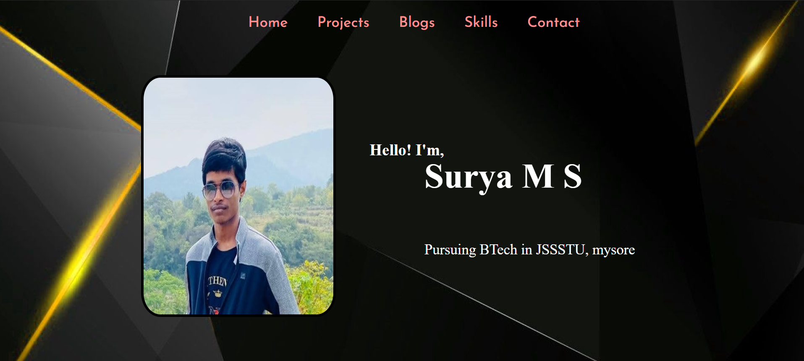
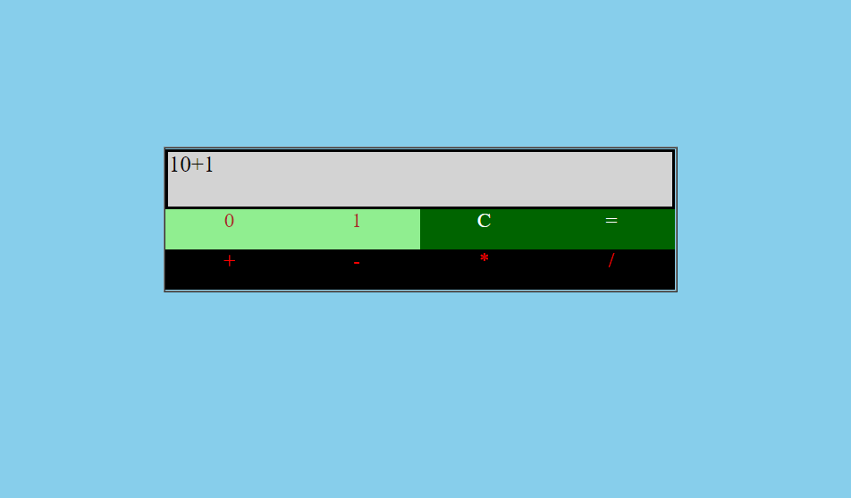
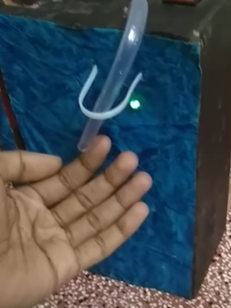

The project involves controlling home appliances using mobile phone using blynk application and also involved setting up laptop as local blynk server. The hardware components used are NodeMCU wifi microcontroller and 5V relay swtich.
Home automation using IoT

Portfolio website

This portfolio webstite involves details about myself and it is statically hosted on github.
Binary calculator

This is a calculator to perform arithmetic operations on binary numbers. It mainly uses HTML, CSS and JavaScript
Speaking system for mute people

The project aims at improving communication ability of mute people by using hand gestures. The project consisted a glove mounted with accelerometer and flex sensors to track the unique movement of hand and arduino doing the job of encoding the movement with a unique speech eventually produced in speaker .
Automatic hand sanitiser dispenser

This project is aimed at avoiding contact while using hand sanitiser. It is made using arduino microcontroller, water pump, motor driver and 12-V lead acid battery